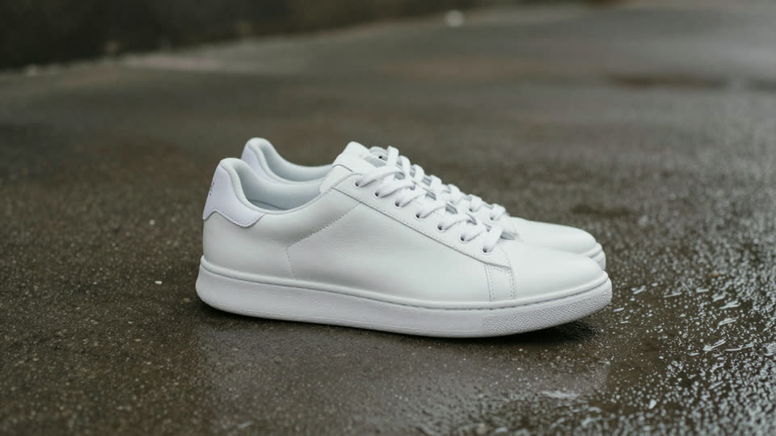

Two shots in. One transition out.
Seam makes a short video that travels from a first shot to a last one through an effect. Images, clips or 3D models in; open-weights LTX-2.5 on your own GPU; every take is a ComfyUI workflow you can open.

- Whip Pan
- Smoke
- Water Bend
Real takes, seed 1, no retouching. The input stills are fictional, made for testing.
Three ways in
Each shot takes whatever you have. Everything becomes the frame the transition starts from or lands on.
-
An image
PNG, JPEG or WebP. Seam reads what is in it with a small local model and writes that into the prompt; you can correct the line.
-
A 1–6 s clip
The transition leaves from the first clip's last frame and lands on the second clip's first frame, then Seam joins clip, transition and clip into one video.
-
A 3D model (.glb)
Frame it in the browser and record a 3 s camera orbit: the orbit becomes the clip. Or keep one angle as a still. The model never leaves your machine.
Only effects that pass ship
Each effect is our own prompt, routed to the model that renders it best and played on two image pairs, two seeds, then on unseen pairs. Pick one, or let Seam surprise you.
Render time from submit to finished 5 s video on one RTX 5090, including the prompt enhancer and model loading. Seven more effects have since passed (Lava, Beast, Ink, Light Burst, Zoom Through, Melt, Wind Vortex), and these three also render 10 s takes (~76 s).
Open by default
- Open weights
- LTX-2.5 first/last-frame video with its in-graph prompt enhancer, and Gemma-4 E2B to read the shots, by default. Other models can be picked per transition; partner models only on Comfy Cloud, with credits.
- Every take is a workflow
- Seam archives the exact graph it submitted. "Open in ComfyUI" downloads it with both shots; the receipt says how the take was made.
- Comfy Developer Platform
- Every render goes through the official Comfy SDK to the Comfy API v2: served locally by comfy-api-proxy in front of your ComfyUI. The same client can point at Comfy Cloud, which we have not tested yet.
- Agents included
- A skill and an MCP server let Claude Code or any MCP agent plan, render, review and refine transitions, packaged as a Claude Code plugin and an Agent Plugins plugin.
Run it
A 32 GB NVIDIA GPU, 64 GB RAM and ComfyUI. The full guide, written so an agent can follow it too, is install.md.
- Get the models (~44 GB, open weights)
git clone https://github.com/jdnichollsc/seam && cd seam uv run python scripts/download_models.py --models-dir "<ComfyUI>/models" --only l25 - Start the Comfy API proxy in front of ComfyUI
uv tool install comfy-api-proxy==0.1.6 comfy-api-proxy start --comfyui http://127.0.0.1:8188 - Check, then open the studio
uv run seam doctor uv run seam serve # http://127.0.0.1:7860
Prefer the terminal? seam make first.png last.png --preset smoke. Prefer an agent? Install the plugin and ask for a transition.